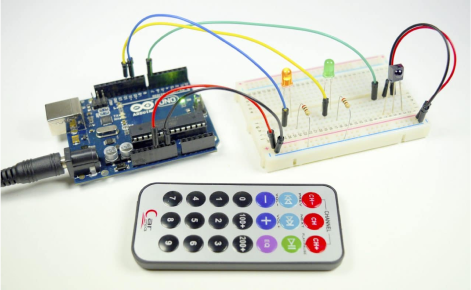
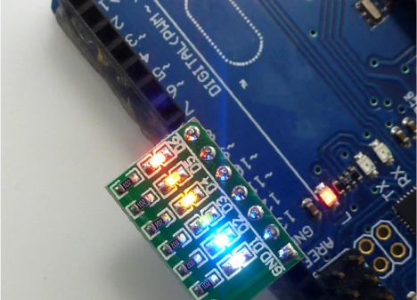
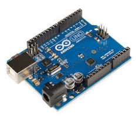

1.Arduino Open source hardware
*Definition of open source hardware
*Definition of Arduino
*Arduino basic control board
*Common application boards for arduino
*Controlling stepper motors with arduino (group task)
Open-source hardware (OSH, OSHW) consists of physical
artifacts
of technology designed and offered by the
open-design movement
. Both
free and open-source software
(FOSS) and open-source hardware are created by this
open-source culture
movement and apply a like concept to a variety of components. It is
sometimes, thus, referred to as FOSH (free and open-source hardware).
The term usually means that information about the hardware is easily
discerned so that others can make it – coupling it closely to the
maker movement
.
Find the full definition on Wikipedia
Open-source hardware - Wikipedia
Arduino (
/ɑːrˈdwiːnoʊ/
) is an Italian
open-source hardware
and
software
company, project, and user community that designs and manufactures
single-board microcontrollers
and
microcontroller
kits for building digital devices.
Arduino board designs use a variety of
microprocessors
and controllers. The boards are equipped with sets of digital and
analog
input/output
(I/O) pins that may be interfaced to various expansion boards
('shields') or
breadboards
(for prototyping) and other circuits.
The Arduino project began in 2005 as a tool for students at the
Interaction Design Institute Ivrea
, Italy, aiming to provide a low-cost and easy way for novices and
professionals to create devices that interact with their environment
using
sensors
and
actuators
. Common examples of such devices intended for beginner hobbyists
include simple
robots
,
thermostats
, and
motion detectors
.
Arduino - Wikipedia
The Arduino Uno is an
open-source
microcontroller board
based on the
Microchip
ATmega328P
microcontroller
(MCU) and developed by
Arduino.cc
and initially released in 2010.The word "
uno
" means "one" in
Italian
and was chosen to mark a major redesign of the Arduino hardware and
software. The
microcontroller board
is equipped with sets of digital and analog
input/output
(I/O) pins that may be interfaced to various
expansion boards
(shields) and other circuits.
[1]
The board has 14 digital I/O pins (six capable of
PWM
output), 6 analog I/O pins, and is programmable with the
Arduino IDE
(Integrated Development Environment), via a type B
USB cable
.
[4]
It can be powered by a USB cable or a barrel connector that accepts
voltages between 7 and 20 volts, such as a rectangular
9-volt battery
. It has the same microcontroller as the
Arduino Nano
board, and the same headers as the Leonardo board.
[5]
[6]
The hardware reference design is distributed under a
Creative Commons
Attribution Share-Alike 2.5 license and is available on the Arduino
website. Layout and production files for some versions of the hardware
are also available.
Arduino Uno - Wikipedia
Arduino Mega: This board is similar to the Uno, but has more I/O pins, a
total of 54 digital input/output pins (14 of which can be used as PWM
outputs), 16 analog inputs, 4 UARTs (hardware serial line port), a 16
MHz quartz resonator, a USB connector, a power jack, an ICSP header and
a reset button. This board is particularly suitable for projects
requiring more I/O pins.
Arduino Nano: This board is very compact and suitable for use in
projects where space is limited. Although it is small, it is very
powerful and has the same processing power and memory capacity as the
Arduino Uno.
Arduino infrared remote control module:Includes IR receiver and remote
control.When you press a button on an infrared remote control, it emits a
specific infrared signal. This signal is received by the infrared receiver
and converted into an electrical signal, which is then read and interpreted
by the Arduino board. The Arduino board can perform specific tasks based on
this signal, such as controlling an LED light switch.
Arduino's infrared remote control module can be used in a variety of
projects, including robots, home automation systems, wirelessly controlled
toys, and more. You can program the Arduino to respond to any button on the
infrared remote control to implement a variety of functions.
LED modules usually consist of one or more LED lights and some other
electronic components (such as resistors). An LED (Light Emitting Diode) is
a semiconductor device that emits light. When current passes through an LED,
it emits light.
In addition to the common single-color LED modules, there are also RGB LED
modules. Each LED in the RGB LED module contains three colors of red, green,
and blue LEDs. By adjusting the brightness of these three colors, various
colors of light can be mixed.
LED modules can be used in a variety of Arduino projects, including
displaying status, indicators, backlights, visual effects, and more. For
example, you can use the LED module to create a traffic light, a colored
light effect, or use it to display the working status of your Arduino
project.
Arduino can effectively control stepper motors. A stepper motor is a type of
motor that can convert electronic pulses into mechanical rotation. Each
pulse causes the motor to rotate by a certain step, which is a certain
angle. The main advantage of a stepper motor is that it can provide precise
position control.
The following are the basic steps for using Arduino to control stepper
motors:
Prepare hardware: You need an Arduino development board, a stepper motor, a
stepper motor driver module (such as ULN2003, A4988, or DRV8825), and some
connecting cables.
Connecting hardware: Connect the stepper motor to the driver module, and
then connect the driver module to the Arduino development board. The
specific connection method may vary depending on the model of the driver
module and the type of stepper motor, so please refer to the data manual of
your driver module and stepper motor.
Writing code: Arduino provides a library called Stepper that allows for easy
control of stepper motors. You need to create a Stepper object in the code
and use its stepping method to control the motor. You can set the speed (in
steps per minute) and direction (clockwise or counterclockwise) of the
motor.
Upload Code: Upload your code to the Arduino development board, and then the
motor should start rotating according to your instructions.
Debugging and optimization: You may need to adjust the speed and number of
steps of the motor to meet your needs. You can also add more code to control
other behaviors of the motor, such as acceleration, deceleration, timed
stops, etc.


